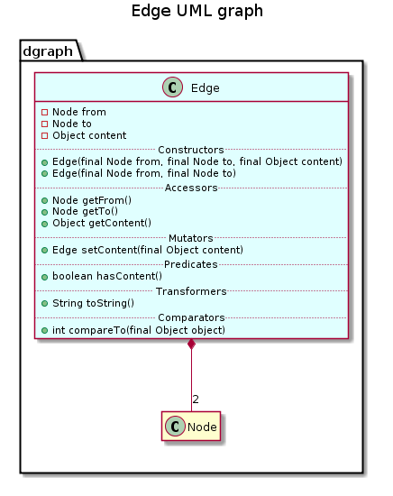

public class Edge
extends java.lang.Object
implements java.lang.Comparable<java.lang.Object>
This class gives a standard representation for an edge of a graph.
An edge is composed of a content, and two nodes
fromtoof class Node.
This class implements class Comparable and provides the compareTo(java.lang.Object) method that compares the edge with those in parameter by sorting indexes of the nodes that compose it.
Therefore, edges can be stored in a sorted collection since they are comparable, and in particular in a sorted set where set operations are provided.

| Constructor and Description |
|---|
Edge(Node from,
Node to)
Constructs a new edge with the specified node as origin and destination node, and a null value as content.
|
Edge(Node from,
Node to,
java.lang.Object content)
Constructs a new edge with the specified node as origin and destination node, with the specified content.
|
| Modifier and Type | Method and Description |
|---|---|
int |
compareTo(java.lang.Object object)
Compares this edge with those in parameter, based on their identifiers.
|
java.lang.Object |
getContent()
Returns the content this edge.
|
Node |
getFrom()
Returns the origin node of this edge.
|
Node |
getTo()
Returns the destination node of this edge.
|
boolean |
hasContent()
Returns true if content of this edge is not the null value.
|
Edge |
setContent(java.lang.Object content)
Replaces the content of this edge with the specified one.
|
java.lang.String |
toDot()
Returns the dot description of this edge in a String.
|
java.lang.String |
toString()
Returns a String representation of this edge.
|
public Edge(Node from, Node to, java.lang.Object content)
Constructs a new edge with the specified node as origin and destination node, with the specified content.
from - the origin nodeto - the destination nodecontent - the edge contentpublic Node getFrom()
Returns the origin node of this edge.
public Node getTo()
Returns the destination node of this edge.
public Edge setContent(java.lang.Object content)
Replaces the content of this edge with the specified one.
content - The edge contentpublic java.lang.Object getContent()
Returns the content this edge.
public boolean hasContent()
Returns true if content of this edge is not the null value.
public int compareTo(java.lang.Object object)
Compares this edge with those in parameter, based on their identifiers.
The result is zero if the identifiers are equal; 1 if this edge’s identifier is greater, and -1 otherwise.
This comparison method is needed to define a natural ordering. It allows to use objects of this class in a sorted collection
compareTo in interface java.lang.Comparable<java.lang.Object>object - the specified element to be compared with this edgepublic java.lang.String toString()
Returns a String representation of this edge.
toString in class java.lang.Objectpublic java.lang.String toDot()
Returns the dot description of this edge in a String.